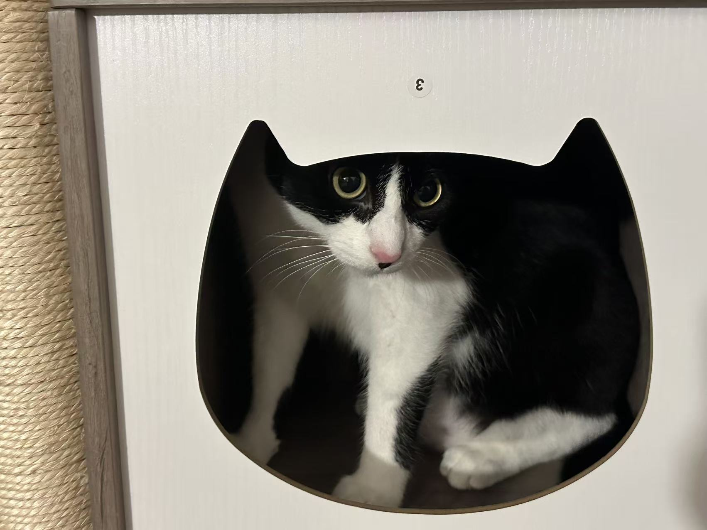
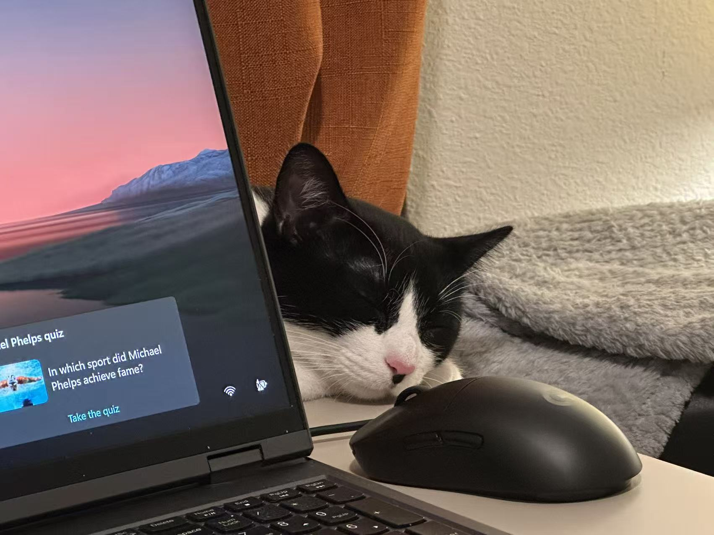
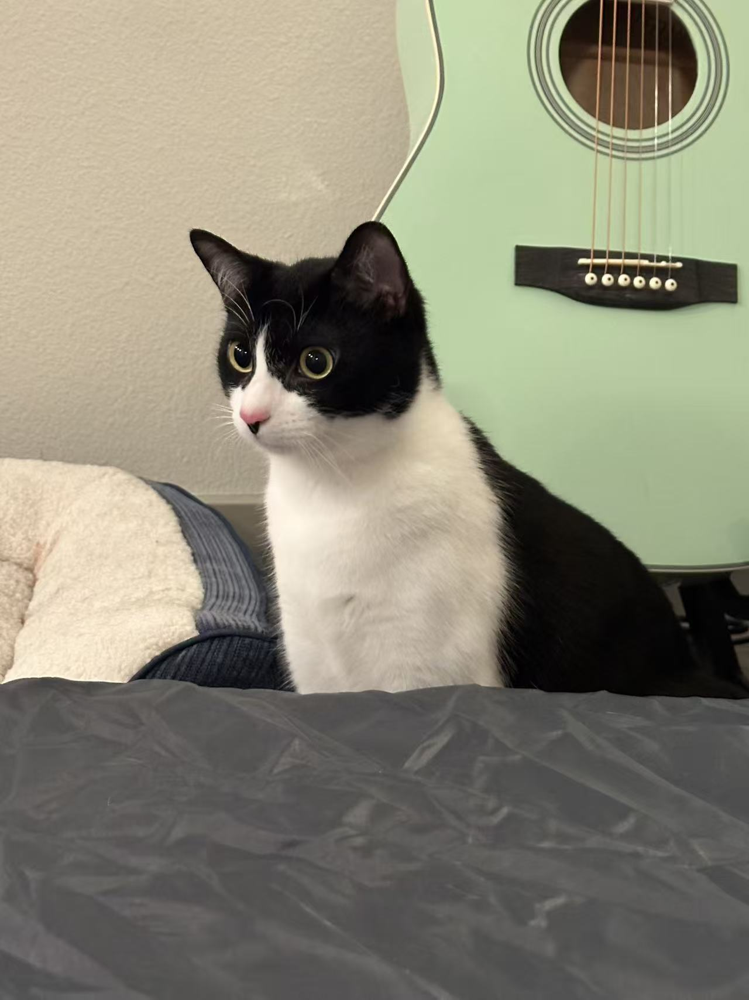

Resume
Interests
- Basketball
- Playing the piano
- Playing video games
Education
- Beijing Information Science & Technology University – B.Eng. Computer Science (2018–2022)
- SMU – M.S. Computer Science (2023–2025)
My cat
Meet Kiki — my one-year-old black and white cat. She is an important part of my life, known for her curiosity, playful spirit, and endless charm.
 